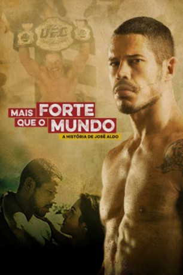

IMDB-Wertung: 7.3 / 10
IMDB-Wertung: 7.3 / 10  Metascore:
Metascore: 
Nach einer schweren Kindheit, konfrontiert der talentierte Kämpfer José Aldo in dieser Sport-Filmbiografie auf dem Weg zum MMA-Champion seine inneren Dämonen.
 IMDB-Wertung: 7.3 / 10 Metascore:
Nach einer schweren Kindheit, konfrontiert der talentierte Kämpfer José Aldo in dieser Sport-Filmbiografie auf dem Weg zum MMA-Champion seine inneren Dämonen.
Jahr: 2016
Dauer: 118 Minuten
FSK:
Land: Brasilien Studio: Downtown FilmesTonspuren:
Untertitel:
Auflösung: 1080p (1920x1080) Größe: 7454 MB
Genre: Action, Drama, Sport, Biographie
Regisseur: Afonso Poyart
Drehbuch: Kristina Magdalena Henn
Soundtrack:
Darsteller:
Datei: X:\2016(N-Z)\Stronger Than the World (2016, FSK, 1920x1080).mkv seit 23.02.2017
Festplatte: HD 2016(A-Z)
 Es gibt insgesamt 182 Filme in der Gruppe '2016(N-Z)'
Es gibt insgesamt 182 Filme in der Gruppe '2016(N-Z)'